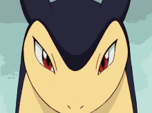
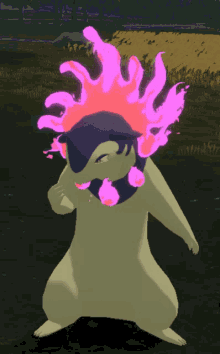

Typhlosion has two different types, its regular form which has blue fur and its Hisuian form which is purple with flames coming out all around its neck. Typhlosions regular form is a pure fire type while its Hisuian form is ghost and fire type.
Typhlosion is also a "volcano pokemon" and is a badger like creature which uses its flame for defense. It is known for using moves like eruption by using its red spots on its neck that burst into flames during battle.


Typhlosion is more short tempered and quick to battle. Typhlosion also has the exact same base stats as Charizard. You can only find Typhlosion in the wild by playing Pokemon Go, but other than that it is only obtainable by evolving Quilava at level 36.
Hisuian Typhlosion has its second ghost type, and its flames is said to purify lost, forsaken souls. Hisuian Typhlosion is more relaxed than its regular form and is often seen starting into space while observing life.
>Shiny<